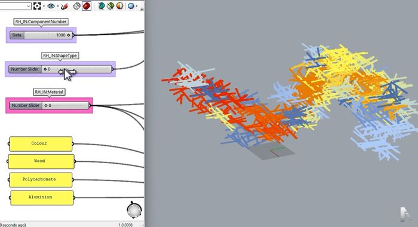
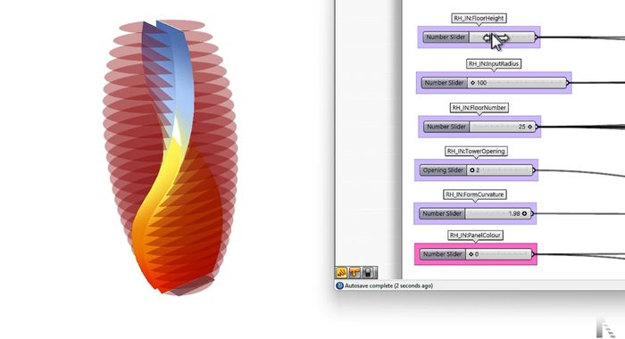
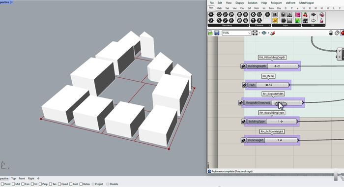
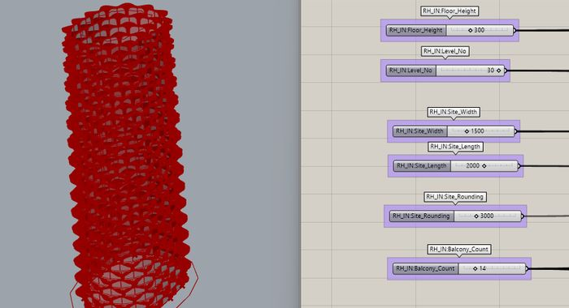
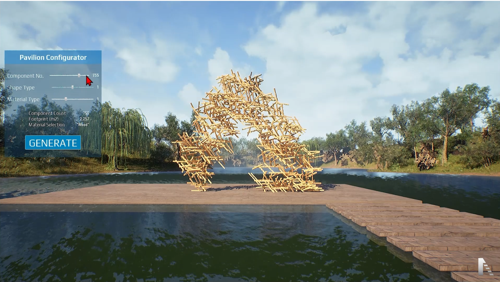
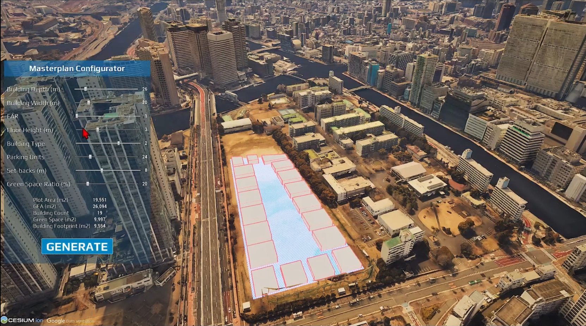
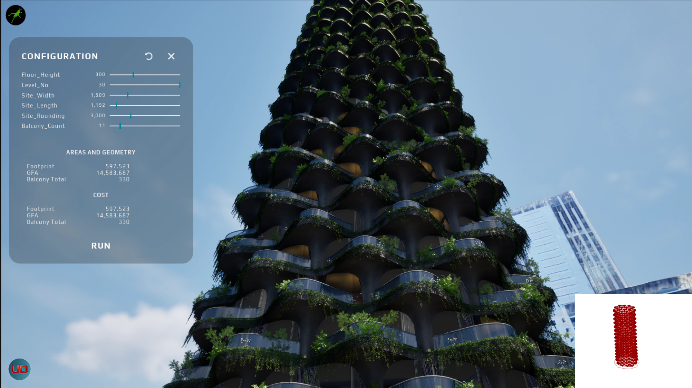
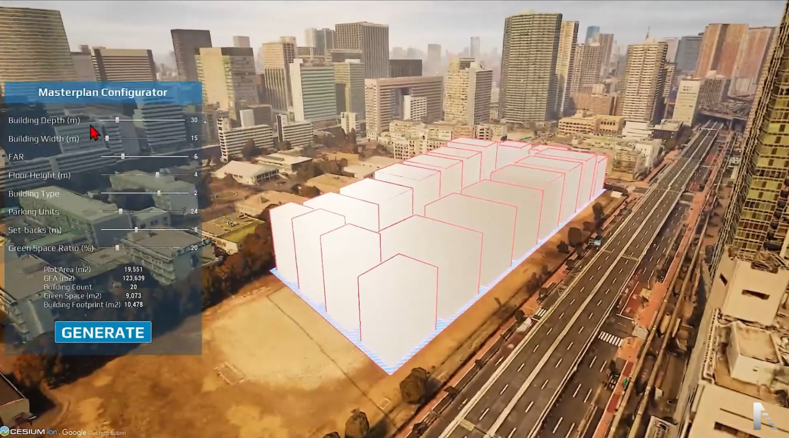
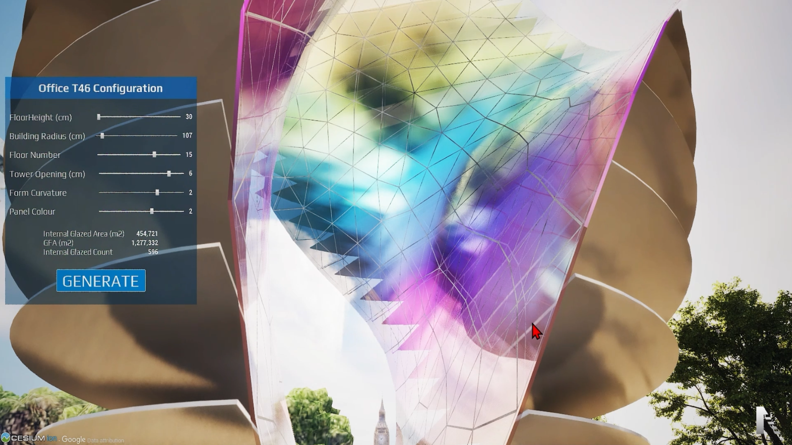

Arki Engine。
ツインを支える研究。
Arki Engineは、Unreal Engine上で動く私たちのリアルタイム設計プラットフォームです。Grasshopperのロジックがジオメトリを駆動するため、パラメーターを動かすと、パビリオンもタワーも地区全体も、集計表ごと再生成されます。ここで得た知見は、すべてツインに還元しています。
ツールが考える瞬間を見る。
4つのコンフィギュレーターを、それぞれライブで収録しました。スライダーが動き、ジオメトリが再生成され、パネルの数値も合わせて再計算されます。
755コンポーネント · 2,257 m² · 木材、規格材、ポリカーボネートをスライダーひとつで切替
オフィスタワー T46 · 20階 · ガラスパネル864枚 · ウェストミンスター3D Tiles
敷地19,551 m² · FAR 1〜6 · 駐車場、セットバック、緑地率
30層 · 緑化バルコニー330 · 14,584 m²をドラッグに合わせて再計算
私たちの街を、生きたモデルに。
899棟の実在建物のフットプリントから構築した、ストックポート中心市街地です。ツインが持つレイヤーを切り替えられます。高さ、ランドマーク、自治体がすでに公開しているライブフィード、そしてスタジオ自体。
ドラッグで視点を回転、建物をタップすると名称を表示します。赤いビームは45 Middle Hillgateのスタジオを示しています。
フィードの数値は説明用のシミュレーションです。記載したデータソースは、私たちが統合する公共データや事業者フィードの種類を示すもので、統合は常にデータ所有者の利用条件に従います。建物フットプリント © OpenStreetMap contributors。EPSG:4326からローカルなメートル座標に投影しています。
Grasshopperからゲームエンジンへ。
すべてのコンフィギュレーターは、Grasshopperの定義から始まります。これらのキャンバス上のRH_INパラメーター（コンポーネント数、階高、形態の曲率、素材）が、Unreal Engineのライブスライダーになります。そのため、建築家がすでに信頼しているロジックが、そのままリアルタイムモデルを駆動します。




エンジンから生まれた8つの検討。

木造パビリオン
755コンポーネントの集積

オフィスタワー T46
パラメトリックなマッシング検討

地区マスタープラン
データ駆動型の区画レイアウト

集合住宅タワー
リアルタイムのファサード検討

キャノピー・パビリオン
ジェネレーティブ構造

アーバンプラン
コンテクスト + ゾーニングレイヤー

複合用途タワー
設定可能なジオメトリ

ウォーターフロント・パビリオン
素材コンフィギュレーター
スクロールでギャラリーを回転
ウォークスルーUnreal Engineでのリアルタイム設計（英語）
ラボを支える技術。
パラメトリックなロジックはRhinoとGrasshopper、BIMはRevit、GISはQGIS、リアルタイムはCesiumとPLATEAUのタイリングを組み合わせたUnreal Engine 5。そして、IFC、TopologicPy、グラフデータベース、FastAPIブリッジによるデータレイヤーが全体をつなぎます。